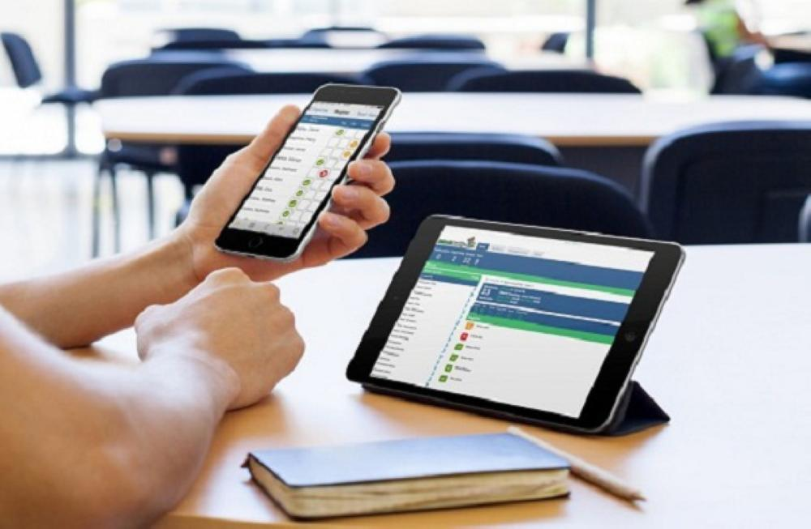

• لقد قطعت الهواتف المحمولة شوطا طويلا بشكل لا يصدق في السنوات الثلاثين الماضية.
• 99٪ من الشباب في المملكة المتحدة الذين تتراوح أعمارهم بين 16 و 24 عامًا يمتلكون هاتفًا ذكيًا ، مما أدى إلى التحول في طريقة تفاعلنا مع المحتوى – وحتى مع بعضنا البعض. لا يقتصر الاعتماد المتزايد على الهواتف على الشباب فقط.
• حللت دراسة عالمية أجراها 11 من علماء الأنثروبولوجيا عام 2021 استخدام الهواتف الذكية من "كبار السن": الأشخاص الذين لا يعتبرون أنفسهم صغارًا ولا كبارً
صعود تقنية الهواتف الذكية
• ما هو تأثير ذلك على كيفية استهلاكنا للمحتوى؟
• أظهرت دراسة أجرتها شركة ميكروسوفت لعام 2020 أن متوسط مدى الانتباه هو الآن 8 ثوانٍ – أقل من 12 ثانية في عام 2000. أحد أكبر أسباب ذلك هو الكم الهائل من المعلومات الموجودة دائمًا.
• أصبحت الأجهزة المحمولة أيضًا جزءًا لا يتجزأ من نهجنا للدراسة. أظهر استطلاع عام 2018 من قبل بيت التعلم ،ابحاث السوق أن ما يقرب من 80 ٪ من الطلاب الذين شملهم الاستطلاع أكملوا بعضًا ، إن لم يكن كل ، من عملهم الدراسي باستخدام الهاتف المحمول.
• قال أكثر من 50٪ من المشاركين أنهم استخدموا هواتفهم الذكية للتواصل مع الأساتذة والوصول إلى مواد الدورة التدريبية ، بينما استخدم أكثر من 40٪ هواتفهم لإجراء الأبحاث والدخول إلى نظام إدارة التعلم الخاص بهم. أصبحت الهواتف المحمولة أداة مهمة للدراسة ، ما هو تأثير ذلك على كيفية معالجة أدمغتنا للمعلومات وحفظها؟
تغيير طريقة التفكير وتفسير المحتوى
• هناك أيضًا دليل على أن وجود كل هذه المعلومات في متناول أيدينا قد غيّر طرق التفكير البشري الراسخة.
• بينما في الماضي كانت هناك أوقات لنكون وحدنا مع أفكارنا ، أصبح من الصعب اليوم ممارسة أنواع تفكير أكثر انتباهاً مثل التفكير التأملي .
• يقول المؤلف نيكولاس كار ، الذي تركز كتبه على التكنولوجيا والثقافة والاقتصاد ، أنه من الصعب جدًا ترجمة المعلومات إلى ذكريات غنية ومترابطة للغاية تجعلنا في النهاية أذكياء وأذكياء.

توظيف التكنولوجيا لتشجيع التعلم
من خلال تشكيل التكنولوجيا للطريقة التي نتعامل بها مع المعلومات وتفسيرها ، تعمل المزيد من الشركات في جميع أنحاء العالم على تطوير تطبيقات وأجهزة وأدوات تميل إلى هذا التحول.
على سبيل المثال ، تتضمن العديد من موارد الدراسة الآن رموز التي يمكن مسحها ضوئيًا بواسطة الهواتف المحمولة. هذه تسمح للطلاب بالوصول إلى المزيد من المواد الدراسية ، بما في ذلك المحتوى التفاعلي.
مثال آخر على ذلك هو أدوات البحث التي تعمل بالذكاء الاصطناعي. تم إنشاؤه كطريقة للطلاب والباحثين المشغولين لمواصلة القراءة ، حيث يقسم الذكاء الاصطناعى المقالات والتقارير وفصول الكتاب الطويلة والمعقدة إلى ملخصات صغيرة الحجم تساعد المستخدمين على معرفة مدى صلة النص بدراساتهم بسرعة وتسهيل الأمر لقراءة المحتوى الطويل على الهواتف الذكية.
أنشأ مطورون آخرون تطبيقات جوال محددة للسماح للأشخاص بالتعلم أثناء التنقل. وهذا يعني أنه يمكن للطلاب تعلم لغة باستخدام دروس قصيرة .
هناك مجال كبير لهذا التطور في المستقبل أيضًا. يُظهر تطبيق جديد من شركة اى يو الإمكانات: أطلقوا مؤخرًا تطبيقًا مجانيًا يهدف إلى إلهام الفتيات لمتابعة وظائف في مجالات العلوم والتكنولوجيا والهندسة والرياضيات. يمكن للفتيات اللواتي تتراوح أعمارهن بين 13 و 18 عامًا إكمال الأنشطة الرقمية ومشاهدة مقاطع فيديو قصيرة وإجراء تجارب في العالم الواقعي وفقًا لسرعتهن الخاصة ، كل ذلك أثناء العمل على توفير حوافز مثل العمل مع النساء اللائي لديهن وظائف ناجحة في مجالات العلوم والتكنولوجيا والهندسة والرياضيات.
افكار اخيرة
أدى ظهور تقنية الهواتف الذكية إلى تحول هائل في الطريقة التي تستهلك بها أدمغتنا المحتوى.
تبنت الشركات في جميع أنحاء العالم هذا التغيير ، مع زيادة عدد التطبيقات والأدوات والمحتوى الذي يتم إنشاؤه لدعم مدى انتباه الطلاب المنخفض والحاجة إلى المشاركة والتعلم أثناء التنقل
المراجع
[١] Statista, UK: smartphone ownership by age from 2012-2021. [online] Available at:
[2] The Guardian, Smartphone is now ‘the place where we live’, anthropologists say. [online] Available at:
[3] YouGov, 2020. By the age of seven, 53% of the children In the UK own a mobile phone [online] Available at:
[4] Muckrack, 2020. How declining attention spans impact your social media. [online] Available at:
[5] Huffington Post, 2018. [online] Available at:
[6] Inside Higher Ed, 2019. ‘Students Are Using Mobile Even If You Aren’t’. [online] Available at:
[7] ScienceNews, 2017. Smartphones may be changing the way we think. [online ]Available at:
[8] NBC News, 2017. Your Smartphone Is Changing the Human Race in Surprising Ways. [online] Available at:
[9] Cornerstone University, 2018. Ten Ways Your Smartphone Can Help You Learn. [online] Available at: